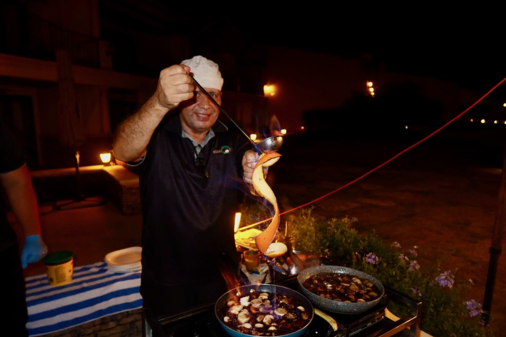

Creative menus
Thoughtful combinations tailored to dietary needs, preferences, and the spirit of the occasion.
The person behind the experience
Personal service, creative menus, and a genuine love of bringing people together around the table.
Meet Chef Leo Castro
Leo’s Catering turns private meals and special events into warm, polished experiences—where the food, setting, and service all feel like they belong together.
Personalized from the start
Leo collaborates with every client to shape the menu, setting, timing, and style of service. From a quiet dinner for two to a beachside celebration for a crowd, the goal stays the same: make it delicious, seamless, and genuinely memorable.
Fresh ingredients, Costa Rican flavor, international inspiration, and careful preparation come together in menus made for the people at the table.

What guests remember
Thoughtful combinations tailored to dietary needs, preferences, and the spirit of the occasion.
Every detail—from setup to timing to cleanup—is considered before the first course is served.
You host the memory, not the logistics. Leo’s team handles the experience so you can be present.
“Chef Leo created an amazing dinner experience for us—knowledgeable, thoroughly professional, and worth every penny.”Todd Denison · Private dining guest